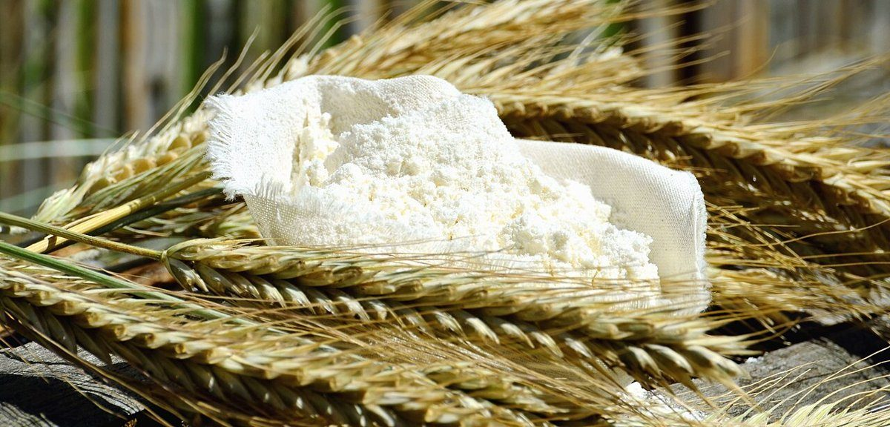

Mon Pain / 静岡県沼津市
メニュー
メニューと価格は準備中です。確認できしだい、ここに並べます。
部品表(いまは空欄)
お店で何を扱っているかは分かっていません。下の表は、枠だけを先に作った空欄です。
| No. | 品名 | 価格 |
|---|---|---|
| 01 | 準備中 | 準備中 |
| 02 | 準備中 | 準備中 |
| 03 | 準備中 | 準備中 |
| 04 | 準備中 | 準備中 |
| 05 | 準備中 | 準備中 |

写真はイメージです
粉と生地のまわり
お店の商品ではなく、国外または撮影地不明のフリー素材のイメージです。



最新の情報は Instagram からご確認ください。